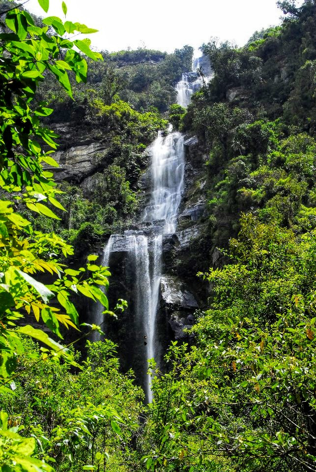

Bienvenidos

Únete a nosotros en increíbles recorridos naturales junto a tu mejor amigo de cuatro patas, podrás disfrutar de la naturaleza, de aventuras inolvidables y explorar paisajes hermosos. Nuestros recorridos están diseñados para proporcionar una experiencia enriquecedora tanto para ti como para tu fiel amigo de cuatro patas.
Nuestros Recorridos
Parque la Chorrera
El Parque La Chorrera queda ubicado en Choachí Cundinamarca, en la vía Bogotá-Choachí kilómetro 27. Es un lugar ideal para disfrutar de una caminata en compañía de tu perro, especialmente si buscas una experiencia con la naturaleza, combina áreas boscosas y espacios abiertos, el parque ofrece una variedad de senderos que se adaptan a diferentes niveles de dificultad.
Cascada Nemusten Sueva
Ofrece una experiencia única y enriquecedora tanto para para ti como para tu amigo de 4 patas. Este recorrido se destaca por sus paisajes impresionantes y su rica biodiversidad, es una de las cascadas más representativas y caudalosas de Cundinamarca, con una caída de 50 metros que nace en el páramo y que recorre el bosque andino, el sendero incluye tramos de ascenso y descenso y con algunas secciones de terreno irregular.
Parque Matarredonda - sendero a laguna Teusaca
Ubicado en el municipio de Choachí. Visitar el Parque Natural Matarredonda y hacer el sendero a la Laguna Teusacá con tu perro puede ser una experiencia muy gratificante. El parque está rodeado de vegetación típica del bosque alto andino, incluyendo frailejones y diversas especies de flora y fauna. La Laguna Teusacá, un espejo de agua rodeado de paisajes verdes y montañosos, ofrece un entorno tranquilo y pintoresco. Es un excelente lugar para disfrutar de la naturaleza y realizar caminatas.
Preguntas Frecuentes
- ¿Qué debo llevar a los recorridos?
Es recomendable llevar agua, snacks para ti y tu perro, y una correa adicional.
- ¿Los recorridos son aptos para todos los perros?
Sí, nuestros recorridos están diseñados para que cualquier perro pueda disfrutar, sin importar su tamaño o raza.
- ¿Cómo puedo hacer una reserva?
Puedes hacer una reserva a través de nuestro sitio web, enviándonos un correo electrónico a Senderosypatas@gmail.com o llamándonos al 3222471283.
- ¿Qué sucede si las condiciones del clima no son adecuadas?
En caso de clima extremo como fuertes lluvias, te notificaremos con antelación y reprogramaremos la caminata para un momento más seguro para ti y tu perro.
- ¿Mi perro necesita estar vacunado?
Sí, por la seguridad de todos los perros, solicitamos que tu perro esté al día con sus vacunas.
- ¿Qué tipo de equipo se debe usar para las caminatas?
Correas, arneses y collares que sean seguros y cómodos para tu perro.